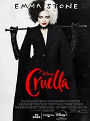

<p align="center"><h1><b>Películas</b></h1></p>
<hr>
<br><br>
<table border="1" align="center">
    <tr>
        <td align="center"><b><i>Nombre</i</b></td>
        <td align="center"><b><i>Afiche</i</b></td>
        <td align="center"><b><i>Año de Estreno</i</b></td>
    </tr>
    <tr>
        <td align="center">El Padrino</td>
        <td><a href="https://es.wikipedia.org/wiki/El_padrino_(novela)" target="_blank"></td></a>
        <td align="center">1972</td>
    </tr>
    <tr>
        <td align="center">Los Simpsons: La Película</td>
        <td><a href="https://es.wikipedia.org/wiki/Los_Simpson:_la_pel%C3%ADcula" target="_blank"></td></a>
        <td align="center">2007</td>
    </tr>
    <tr>
        <td align="center">Cruella</td>
        <td><a href="https://es.wikipedia.org/wiki/Cruella" target="_blank"></td></a>
        <td align="center">2021</td>
    </tr>
</table>
<br><br>
<hr>
<p align="right"><i>Alejandra D'Ambrosio</i></p>
